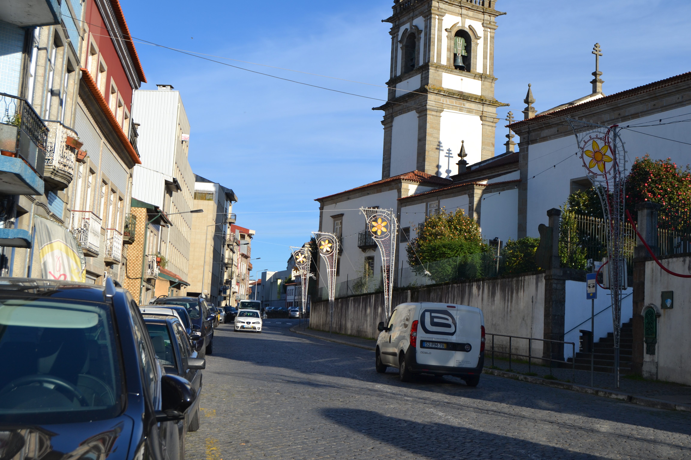

Cangosta da Escoura - vista norte.Cangosta da Escoura - vista sul.

Imagem atual da RuaImagem atual da Rua
Pequena artéria, de carácter rural, estabelecia ligação entre a igreja de S. Vicente e a
igreja e convento do Carmo.
Aberta em data que desconhecemos, não está totalmente representada no Mappa; nele só vemos a metade Este, embora de ambos os lados.
Sem casas dignas de relevo, apresenta do lado Sul uma série de portas que davam acesso aos quintais das habitações da
rua dos Chãos de Cima. Aliás todo este lado era pertença das casas daquela rua, pois que até os 4 edifícios (n.ºs 8, 24, 27 e 28) nele
representados pertenciam, respectivamente, aos seus prazos n.ºs 46, 27, 23 e 22.
Do lado Norte, há apenas 5 pequenas casinhas totalmente ligadas aos campos que as envolviam: assim a casa do prazo n.ºs 30 e 31 andam emprazadas
juntamente com o campo n.º 29, e as casas 32, 33 e 35 estavam também todas subemprazadas com os quintais n.º 34 e 36 num só título.
Todas estas casas são foreiras ao cabido.
Desde 14 de Setembro de 1885 que passou a chamar-se rua Gabriel Pereira de Castro. Apesar das placas toponímicas existentes
no local competente terem gravado este nome é apenas conhecida como rua da Escoura.
Lista de Casas
Casa Número: 1
Enfiteuta: Desconhecido
Foro: Desconhecido
Descrição: Pertence à casa n.º 9 da Rua das Palhotas, para onde tem frontaria e serventia principais.
Casa Número: 2
Enfiteuta: Desconhecido
Foro: Desconhecido
Descrição: Porta de serventia do quintal da casa n.° 52 da Rua dos Chãos de Cima.
Casa Número: 3
Enfiteuta: Desconhecido
Foro: Desconhecido
Descrição: Quintal da casa n.º 51 da Rua dos Chãos de Cima.
Casa Número: 4
Enfiteuta: Desconhecido
Foro: Desconhecido
Descrição: Porta de serventia da casa n.º 50 da Rua dos Chãos de Cima.
Casa Número: 5
Enfiteuta: Desconhecido
Foro: Desconhecido
Descrição: Porta de serventia do quintal da casa n.º 49 da Rua dos Chãos de Cima.
Casa Número: 6
Enfiteuta: Desconhecido
Foro: Desconhecido
Descrição: Porta de serventia do quintal da casa n.º 48 da Rua dos Chãos de Cima.
Casa Número: 7
Enfiteuta: Desconhecido
Foro: Desconhecido
Descrição: Porta de serventia do quintal da casa n.º 47 da Rua dos Chãos de Cima.
Casa Número: 8
Enfiteuta: Desconhecido
Foro: Desconhecido
Descrição: Pertença do n.º 46 da Rua dos Chãos de Cima.
Casa Número: 9
Enfiteuta: Desconhecido
Foro: Desconhecido
Descrição: Quintal da casa n.º 45 da Rua dos Chãos de Cima.
Casa Número: 10
Enfiteuta: Desconhecido
Foro: Desconhecido
Descrição: Quintal da casa n.º 44 da Rua dos Chãos de Cima.
Casa Número: 11
Enfiteuta: Desconhecido
Foro: Desconhecido
Descrição: Quintal da casa n.º 43 da Rua dos Chãos de Cima.
Casa Número: 12
Enfiteuta: Desconhecido
Foro: Desconhecido
Descrição: Quintal da casa n.º 42 da Rua dos Chãos de Cima.
Casa Número: 13
Enfiteuta: Desconhecido
Foro: Desconhecido
Descrição: Quintal da casa n.º 41 da Rua dos Chãos de Cima.
Casa Número: 14
Enfiteuta: Desconhecido
Foro: Desconhecido
Descrição: Quintal da casa n.º 40 da Rua dos Chãos de Cima.
Casa Número: 15
Enfiteuta: Desconhecido
Foro: Desconhecido
Descrição: Porta de serventia do quintal da casa n.º 39 da Rua dos Chãos de Cima.
Casa Número: 16
Enfiteuta: Desconhecido
Foro: Desconhecido
Descrição: Porta de serventia do quintal da casa n.º 38 da Rua dos Chãos de Cima.
Casa Número: 17
Enfiteuta: Desconhecido
Foro: Desconhecido
Descrição: Porta de serventia do quintal da casa n.º 37 da Rua dos Chãos de Cima.
Casa Número: 18
Enfiteuta: Desconhecido
Foro: Desconhecido
Descrição: Porta de serventia do quintal da casa n.º 36 da Rua dos Chãos de Cima.
Casa Número: 19
Enfiteuta: Desconhecido
Foro: Desconhecido
Descrição: Porta de serventia do quintal da casa n.º 35 da Rua dos Chãos de Cima.
Casa Número: 20
Enfiteuta: Desconhecido
Foro: Desconhecido
Descrição: Quintal da casa n.º 34 da Rua dos Chãos de Cima.
Casa Número: 21
Enfiteuta: Desconhecido
Foro: Desconhecido
Descrição: Porta de serventia dos quintais das casas n.ºs 32 e 33 da Rua dos Chãos de Cima.
Casa Número: 22
Enfiteuta: Desconhecido
Foro: Desconhecido
Descrição: Porta de serventia do quintal da casa n.º 31 da Rua dos Chãos de Cima.
Casa Número: 23
Enfiteuta: Desconhecido
Foro: Desconhecido
Descrição: Caminho de serventia das casas n.ºs 28, 29 e 30 da Rua dos Chãos de Cima.
Casa Número: 24
Enfiteuta: Desconhecido
Foro: Desconhecido
Descrição: Pertence ao n.º 27 da Rua dos Chãos de Cima.
Casa Número: 25
Enfiteuta: Desconhecido
Foro: Desconhecido
Descrição: Porta de serventia da casa n.º 26 da Rua dos Chãos de Cima.
Casa Número: 26
Enfiteuta: Desconhecido
Foro: Desconhecido
Descrição: Quintal da casa n.° 25 da Rua dos Chãos de Cima.
Casa Número: 27
Enfiteuta: Desconhecido
Foro: Desconhecido
Descrição: Pertence ao n.º 23 da Rua dos Chãos de Cima
Casa Número: 28
Enfiteuta: Desconhecido
Foro: Desconhecido
Descrição: Pertence ao n.º 22 da Rua dos Chãos de Cima
Casa Número: 29
Enfiteuta: Pedro Francisco Rodrigues, da rua dos Chãos de Cima, c.c. Maria de Matos Vieira
Foro: 100 reis e 1 alqueire de trigo
Descrição: Denominado “Campo ou Cortelho da Escoura”. Foi pertença do prazo do casal de Infias antes de 1736.
Casa Número: 30
Enfiteuta: Desconhecido
Foro: Desconhecido
Descrição: Pertence ao prazo do Campo ou Cortelho da Escoura.
Casa Número: 31
Enfiteuta: Desconhecido
Foro: Desconhecido
Descrição: Pertence ao prazo do Campo ou Cortelho da Escoura.
Casa Número: 32 a 36
Enfiteuta: Isabel Maria da Silva, viúva do Dr. Santos de Araújo Alves, enfiteuta principal do prazo da 1.ª metade do casal do Lagarto.
Foro: Desconhecido
Descrição: Pagam foro ao enfiteuta do prazo da 2.ª metade do casal do Lagarto. Os n.º 34 e 36 correspondem a quintais.
Casa Número: 37
Enfiteuta: Desconhecido
Foro: Desconhecido
Descrição: Quintal da casa n.° 38.
Casa Número: 38
Enfiteuta: Desconhecido
Foro: Desconhecido
Descrição: Pertence à casa n.° 10 da Rua das Palhotas, para onde tem a frontaria principal.